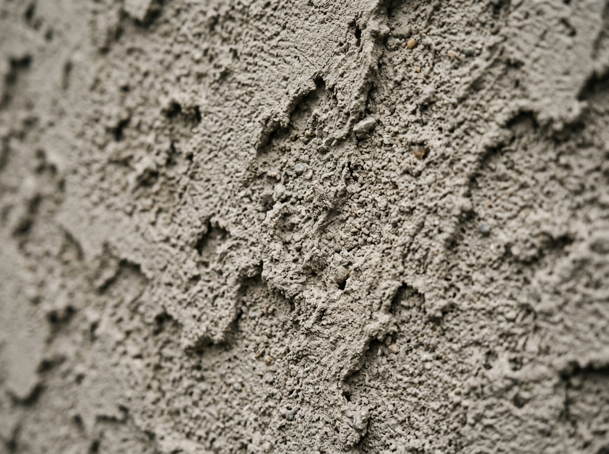
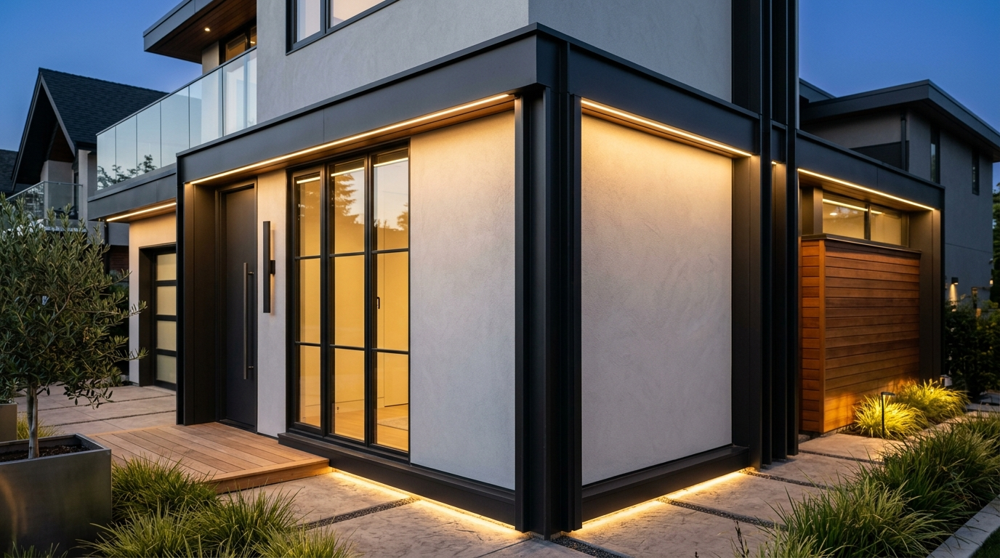
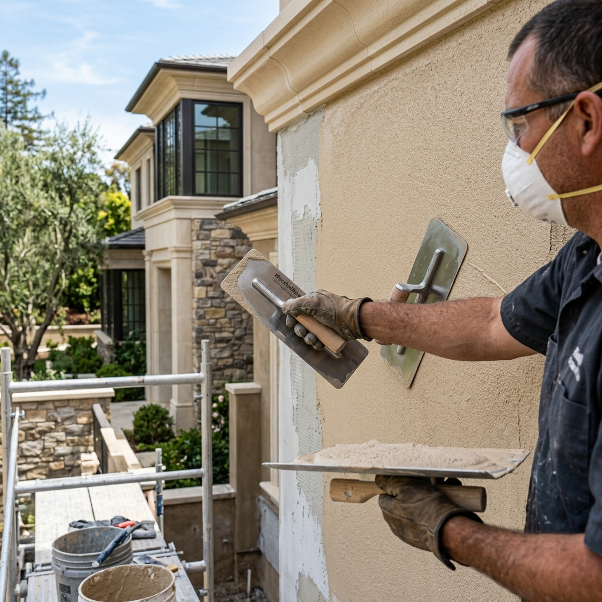
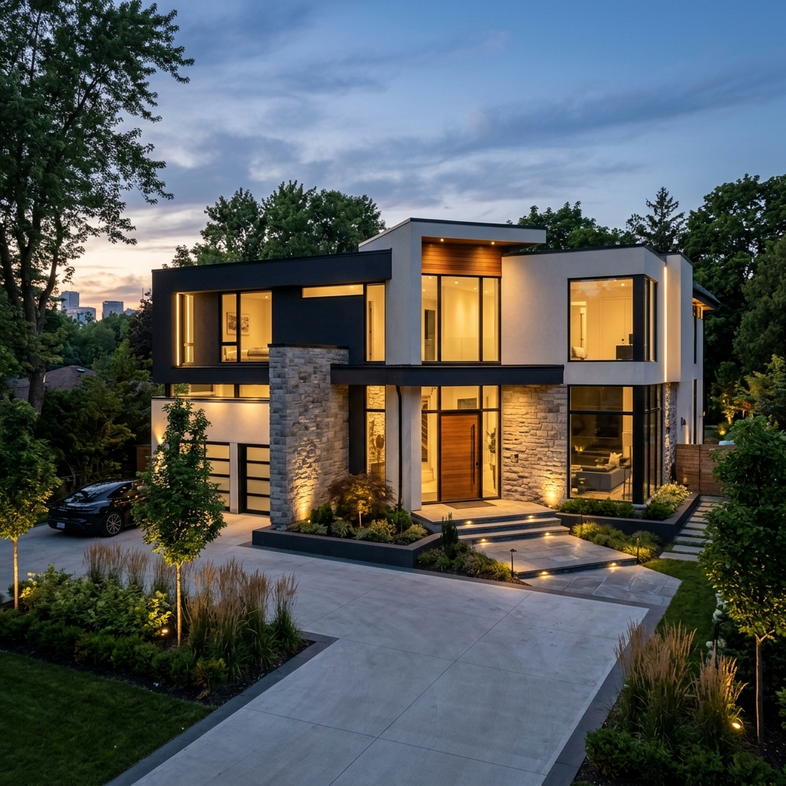
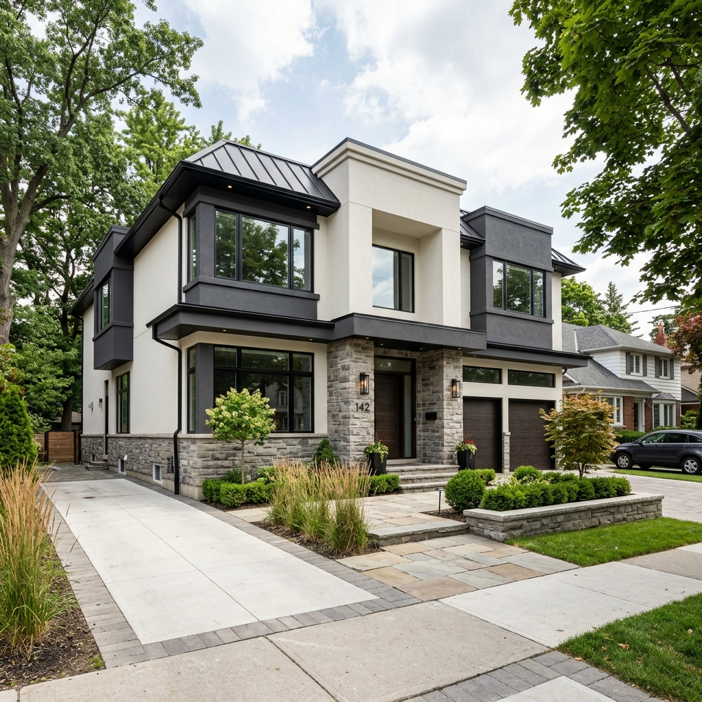

Explore our curated gallery of architectural stucco finish coats, custom surface textures, and UV-resistant acrylic color formulations.

Hover over each texture tile to view its architectural application and surface characteristics.
Heavy, tactile texture created by scraping a serrated trowel across freshly applied acrylic coat. Excellent depth & shadow.

Layered pattern created by spraying or troweling a heavy texture, then flattening peaks with a smooth trowel. Elegant rustic feel.

Rugged, weather-resistant texture produced by dashing fine aggregates or acrylic paste onto the base layer. Extremely impact resistant.

Classic uniform granular texture troweled with a rubber float. The standard for sophisticated modern residential estates.

Ultra-contemporary silk-smooth surface requiring master trowel precision. Gives buildings a sleek architectural monolith look.
Custom EPS-cored cornices, bandings, window surrounds, and keystones coated in matching acrylic plaster.
Our 100% acrylic finishes can be custom-pigmented to match any paint color, natural stone tone, or architectural palette.
Unlike traditional cement stucco that requires painting every 5 years, our acrylic color is integral — tinted through the entire material thickness so minor surface scuffs never reveal a different underlying color.
Our estimators bring physical texture boards and color swatches directly to your site.